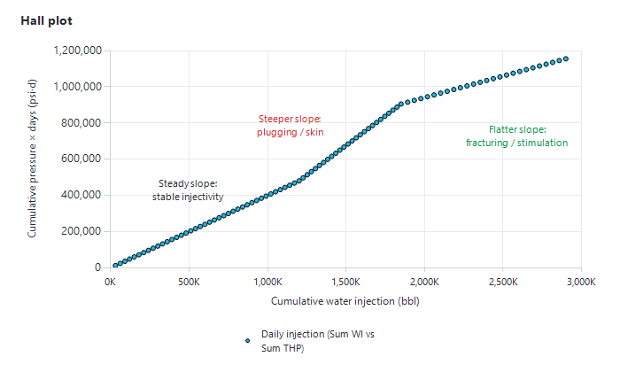
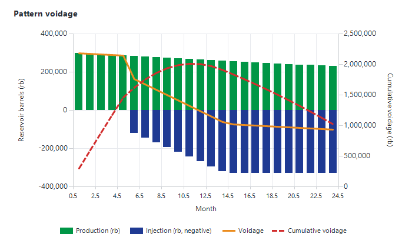

|
Reservoir management plots
1. Overview — where the reservoir management tools are
The Monitoring module has a set of plots and maps for reservoir surveillance: well performance trends, inflow and injectivity, Hall plots, pattern voidage and field maps. They open from these buttons:
|
Window
|
Ribbon group
|
Button
|
Opens
|
|
Producers (Production Monitoring)
|
"Reservoir Monitoring"
|
"Plots"
|
"Monitoring Plots", on "Productivity Index"
|
|
Producers
|
"Reservoir Monitoring"
|
"Pattern performance"
|
"Pattern Performance"
|
|
Producers
|
"Reservoir Monitoring"
|
"Pattern performance 2"
|
"Rm Charts"
|
|
Producers
|
"Reservoir Monitoring"
|
"Maps"
|
The monitoring maps
|
|
Producers
|
(unnamed group)
|
"Well Profile"
|
"Monitoring Plots", on "Well profile"
|
|
Injectors (WI Monitoring)
|
—
|
"Inflow Performance"
|
"Monitoring Plots", on "Injectivity Index"
|
|
Injectors
|
—
|
"Hall Plot"
|
"Monitoring Plots", on "Hall plot"
|
|
Well Model Update
|
"Prosper Analytics"
|
"Well Profile" / "Maps"
|
Well profile / well-model maps
|
Some buttons are hidden on some installations. See also Producers, Injectors and Nodal analysis and well models.
2. Monitoring Plots
The "Monitoring Plots" window has, across the top:
•the plot list (pick one plot type);
•"Location" and "Reservoir" lists, which filter the well list ("All" by default);
•the well list (multi-select): each selected well becomes its own series, labelled with the well name;
•the parameter list, for plots that have several parameters (one parameter is plotted at a time);
•"Pattern:" (only for "Detailled voidage");
•an X-axis list under the chart (only for the allocated plots).
Selecting a plot type, a well or a parameter redraws the chart at once; there is no "plot" button and no date range. On the chart:
•drag a box to zoom; double-click (or "⟲ Unzoom") to unzoom;
•right-click an axis or the title for "Format chart" (title, scale, font, "Dark mode", legend…); right-click a series point for its style; double-click the Y axis to toggle a log scale;
•double right-click to copy the chart to the clipboard ("Chart has been copied to the clipboard.").
2.1 The plot types
|
Plot
|
Wells listed
|
What it shows
|
|
"Production Parameters"
|
Producers
|
Daily "THP", "FP", "THT", "BHP", "BHT", "Gas-lift" or "CHP" vs date
|
|
"dP accross choke"
|
Producers
|
One point per well at its last well test: THP − FP (flowline pressure) vs "Choke opening (/64th)". Wells with a high dP at a small choke are candidates for a bigger choke; wells with a low dP at full opening are limited downstream
|
|
"Tubing sensitivity"
|
Producers
|
Oil rate vs "Tubing size (in)" (4.5", 5.5", 7"), from the last "Calculate KPIs" run (Prosper well models only)
|
|
"Injection Parameters"
|
Water injectors
|
Daily "THP", "BHP", "Water Injection" or "Gas Injection" vs date
|
|
"Allocated Production"
|
Producers
|
Monthly allocated "Oil", "Water", "Gas", "Liquid", "BSW", "GOR" or cumulatives, vs "Date", "Cum Oil", "Cum Gas" or "Cum Liquid"
|
|
"Allocated Injection"
|
Water injectors
|
Monthly allocated "Water Injection", "Gas Injection" or their cumulatives, vs "Date", "Cum Water Injection" or "Cum Gas Injection"
|
|
"Reservoir Pressure"
|
All wells
|
"Reservoir Pressure at Datum" or "Reservoir Pressure at gauge depth" vs date, in the asset's pressure unit
|
|
"Productivity Index"
|
Producers
|
The IPR curve of the well model: liquid rate vs "FBHP at reservoir depth"
|
|
"Injectivity Index"
|
Water injectors
|
The injection IPR: water injection rate vs "FBHP at reservoir depth"
|
|
"VLP"
|
Producers
|
The VLP curve of the well model: liquid rate vs "FBHP at reservoir depth"
|
|
"Hall plot"
|
Water injectors
|
Section 2.2. Listed only if the asset has water injectors
|
|
"Detailled voidage"
|
Patterns
|
Section 2.3. Listed only if pattern voidage has been calculated
|
|
"Well profile"
|
Producers
|
Section 2.4. Listed only if completion data exists
|
"Productivity Index", "Injectivity Index" and "VLP" draw the curves stored by the well model ("Calculate KPIs" in "Well Model Update", see Nodal analysis and well models); they do not compute a PI value from the daily data. Comparing several wells on one chart shows at a glance which wells deliver least for the same drawdown.
On some installations an extra plot, "THP PC" (oil rate vs THP performance curve), is listed.
2.2 Hall plot
For each selected water injector, Precept goes through the daily injection data from oldest to newest and keeps the days with both an injection rate and a THP. It then plots:
•X axis "Sum WI": the running total of the daily injection rates, i.e. the cumulative water injected;
•Y axis "Sum Pressure": the running total of the daily THP, i.e. the integral of injection pressure over time (pressure × days).
Each well is one series, "<Well> THP". Days with missing data are skipped, not counted as zero.
How to read it: while the injectivity is stable, the points lie on a straight line whose slope is proportional to the resistance to injection. A slope that increases (the curve bends upward) means injection is getting harder — plugging, scaling or skin build-up. A slope that decreases (the curve bends downward) means injection is getting easier — fracturing, or stimulation taking effect. Precept uses the wellhead pressure, not BHP minus reservoir pressure, so a change in reservoir pressure or in tubing friction also changes the slope: check it against the "Reservoir Pressure" and "Injection Parameters" plots before concluding.

Figure 1 — Hall plot: cumulative pressure vs cumulative injection. A steeper slope points to plugging, a flatter slope to fracturing.
2.3 Detailled voidage
"Detailled voidage" shows the reservoir-barrel balance of one pattern over time. Choose a pattern type in "Pattern:" ("All Custom Patterns" or a pattern type), then pick the pattern in the list. The "Voidage" chart shows, per month:
•"Oil", "Water" and "Gas": the produced volumes in reservoir barrels, stacked above zero;
•"Water Injection": the injected volume in reservoir barrels, drawn below zero;
•"Voidage" (black line): Production rb − Injection rb;
•"Cumulative Voidage" (dashed, right axis): the running total of the voidage.
A positive voidage means more fluid is withdrawn than injected: pressure will fall. A cumulative voidage that keeps growing means the pattern is under-injected; a falling one means it is over-injected. The data comes from the historical voidage calculation (section 3). Only the last selected pattern is drawn.

Figure 2 — Pattern voidage: production and injection in reservoir barrels, monthly voidage and cumulative voidage.
2.4 Well profile
"Well profile" draws the well as an unfolded section: X "Displacement" (the horizontal distance along the trajectory), Y "TVDSS" (depth downwards). It shows the trajectory ("<Well> Deviation"), the "Wellhead", the BHP gauge, the gas-lift orifice, the ESP and the diluent injection point, the well-model solution node and the datum, each labelled with its depth. The trajectory and equipment come from "Well Completion and traj" (or the Prosper model). Select one well to see the legend.
3. Historical pattern voidage
Pattern voidage is calculated, not imported. Precept turns the allocated surface volumes of each pattern into reservoir barrels, month by month, for every custom pattern, for the field and for each reservoir. Patterns themselves are described in Patterns.
3.1 Inputs
•Pattern allocation factors: for each pattern, the share of each well's production and injection that belongs to it, with an effective date. A factor applies from its date until the next one; before the first date it is 0. For the field and for each reservoir the factor is 1.
•Monthly allocated production and injection of each well.
•PVT per well, from the selected scenario: Bo, Bw, Bg, Rs, and Bwi, Bgi for injection. Without PVT the calculation stops with a warning.
3.2 The calculation
For each pattern, month and well (f = the well's factor in the pattern):
•free gas = produced gas − Rs × oil (0 if negative);
•Production rb = f × (Oil × Bo + Water × Bw + free gas × Bg);
•Injection rb = f × (Water injection × Bwi + Gas injection × Bgi);
•Voidage = Production rb − Injection rb; the cumulative voidage adds each month's voidage × days in the month.
The pattern's VRR (voidage replacement ratio) is Injection rb ÷ Production rb.
3.3 Running it
1.Open the import window with "Pattern properties" in the Decline Curves window (or "Import Asset data" in Field Monitoring, or "Import Historical Allocated Data" in Decline Curves).
2.Choose "Import Patterns Allocation factors" in the parameter list and import or check the factors.
3.Click "Recalculate historical voidage". All the asset's historical voidage is deleted and recalculated, and a message confirms the end.
Recalculate after importing new allocated production, new pattern factors or new PVT. On some installations Precept offers to recalculate the voidage automatically before a forecast when it is older than the forecast start.
4. Pattern Performance
"Pattern performance" opens the "Pattern Performance" window: one chart per well, stacked, all on the same time axis, to compare the wells of an area side by side.
1.Filter with "Location" and "Reservoir", then tick the wells in "Select wells" (any number, producers and injectors).
2.Tick what to show: "Parameters" ("THP", "THT", "FP", "BHP", "BHT", "CHP", "Choke", "Gas-lift", "Water Injection", "Gas Injection"; "PDP", "Frequency", "Motor current" for ESP and PCP wells), "Well Test" ("Oil", "Water", "Gas", "Liquid", "BSW", "GOR", "CHP") and "Allocated" ("Oil", "Water", "Gas", "Liquid", "BSW", "GOR"). "Well Tests" and "Allocated Prod" switch a whole group.
3.Zoom one chart to zoom them all; "Reset scales" or a double-click resets. Use ▲ / ▼ on a chart to move it up or down. A format change on one chart applies to all.
Producer charts show pressures and rates; injector charts show pressure and choke with the injection rate on the right axis. Your tick choices are remembered.
5. Rm Charts (Pattern performance 2)
"Pattern performance 2" opens "Rm Charts": five charts, "Liquid", "Oil", "Gas", "BSW" and "GOR", for the selected producers, to compare well behaviour against depletion.
1.Choose the X axis: "vs Cum Oil", "vs Cum Gas" or "vs time".
2.Pick a reservoir and one or more wells (the first five wells get distinct colours).
3.Click "Get Data".
Zooming the "Liquid" chart applies the same X range to all charts; "Reset scales" restores them. Rates come from monthly allocated production. Plotted against cumulative oil, the BSW and GOR charts show which wells water out or gas out earlier than their neighbours for the same recovery.
6. Monitoring maps
"Maps" in the Producers window opens the map window ("Decline Patterns") in monitoring mode:
•six map tiles, each with its own parameter list at the top, and a bar chart on the right with its own parameter list, sorting the patterns or wells by value;
•"Pattern:" chooses what is mapped: "All Producers", producers of one reservoir or location, "All Injectors", "All Wells", "All Custom Patterns" or a custom pattern type;
•"Scenario:" and the date table: the dates are the first date, each 1 January and the last date of that scenario's forecast; click a date to redraw;
•"Scales" opens "Patterns scale"; "raw Data" shows the values in a table; "Maximize" / "Minimize" enlarges the first map.
Parameters include "THP", "FP", "BHP", "CHP", "Status", the well-model parameters ("Reservoir pressure", "PI", "Inflow c", "API", "Solution GOR", "Salinity"), and the scenario's results such as rates, cumulatives, "Production rb", "Injection rb" and "Voidage". Rates, cumulatives and voidage are taken from the forecast run of the selected scenario at the selected date; pressures are the latest daily values. If the scenario has no forecast, the window cannot open.
6.1 Colours and scales
Each value is coloured in up to five bands, from red (poor) through orange and yellow-green to green (good); missing or zero values are grey. "Status" uses fixed colours: Shutdown red, "Production w/ downtime" yellow-green, Production green, "Not drilled" dark grey, Abandoned light grey. Set the band limits per parameter in "Patterns scale": one table for parameters where higher is better and one where lower is better, columns "1" to "5". Edits are saved at once (Delete clears a cell; Ctrl+C / Ctrl+V copy a cell) and apply at the next redraw.
6.2 Display panel
Click the gear ("Display settings") at the top right of the first map. The "Display" panel has:
•"3D" / "Top" view;
•"Show as": "Show as Patterns" (pattern polygons coloured by value) or "Show as bubble" (one disc per well, coloured by value; all discs have the same size). Bubble mode is used automatically when there are no pattern coordinates;
•"Pattern polygons", "Pattern labels", "Wells", "Well labels", "Background elements", "Background labels", "Pipelines", "Nodes", "Equipment", "Sea surface", "Dark background";
•"Basemap" ("None", "Satellite", "Road"), for maps in geographic coordinates;
•"Label size", "Vertical exaggeration" (3D) and "Bubble size" (bubble mode), each with − / +;
•"Add / edit map data…" to draw or import polygons and background elements.
Only the layers present in the map are listed. Right-click a bar of the bar chart to change its colour; double-click to unzoom.
6.3 Field Monitoring maps
On some installations, Field Monitoring has "Monitoring maps": the same map window with the latest operating status: "Last Day Status", "Last Day Gas", "Last Day Downtime", "Last Week Status", "Last Week Average Gas", "Last Week Average Downtime". Downtime is coloured from green (0 h) to red (24 h).
|